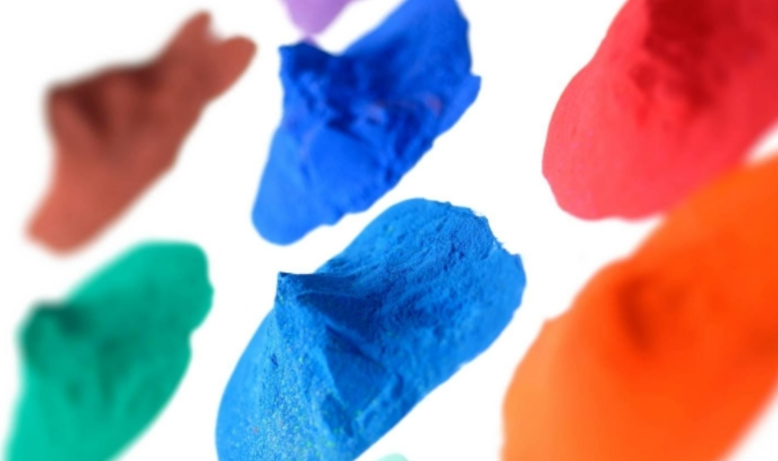
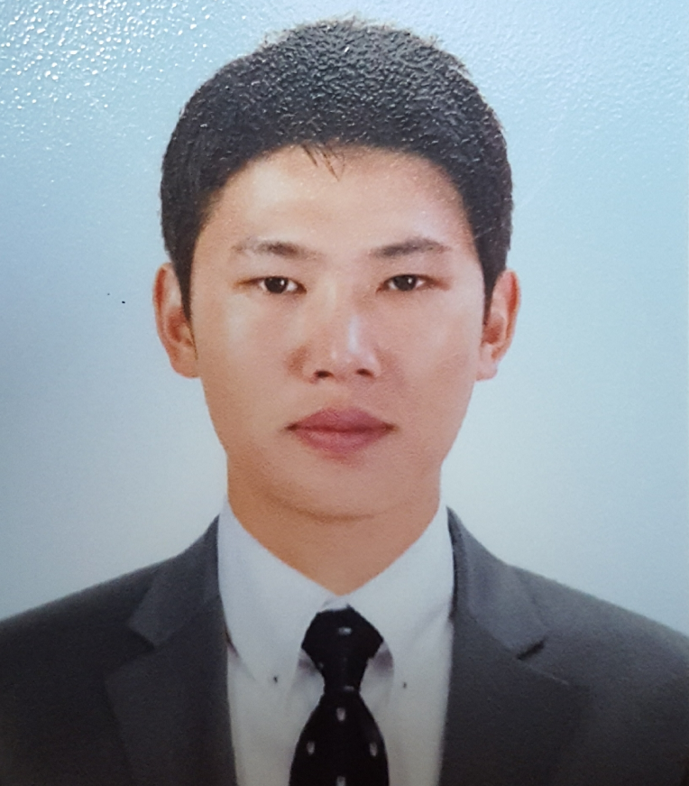
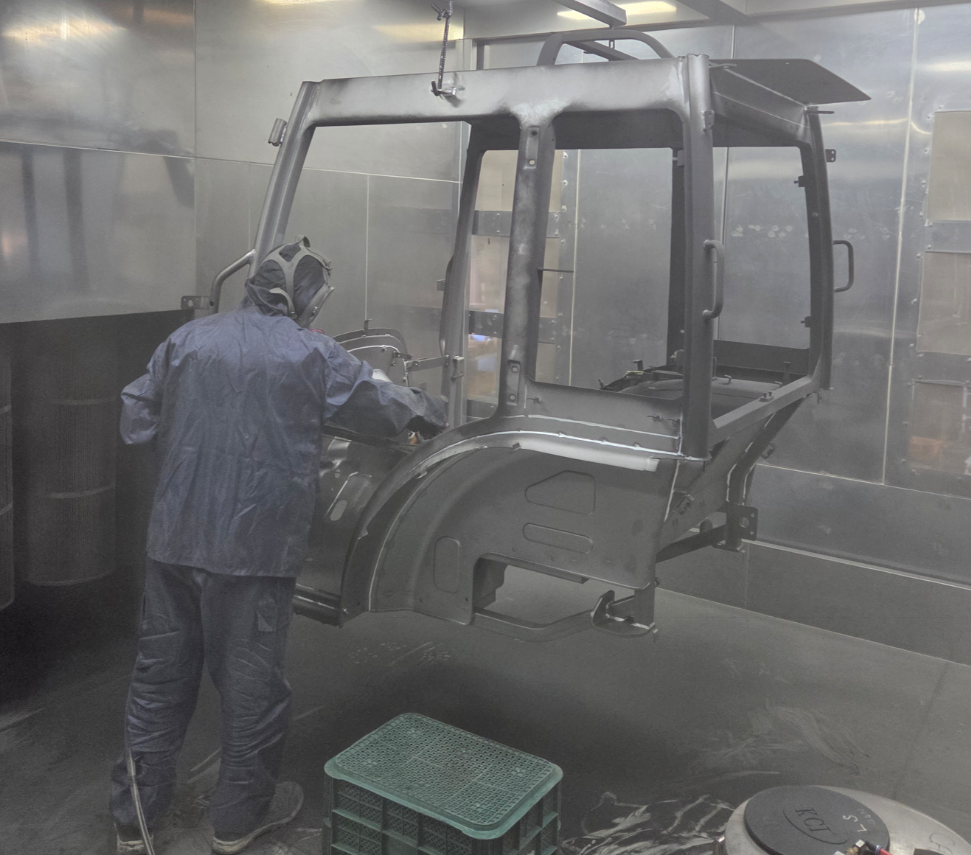
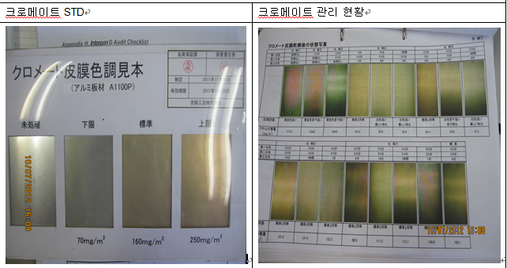
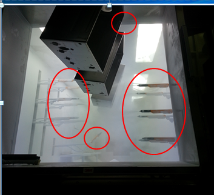
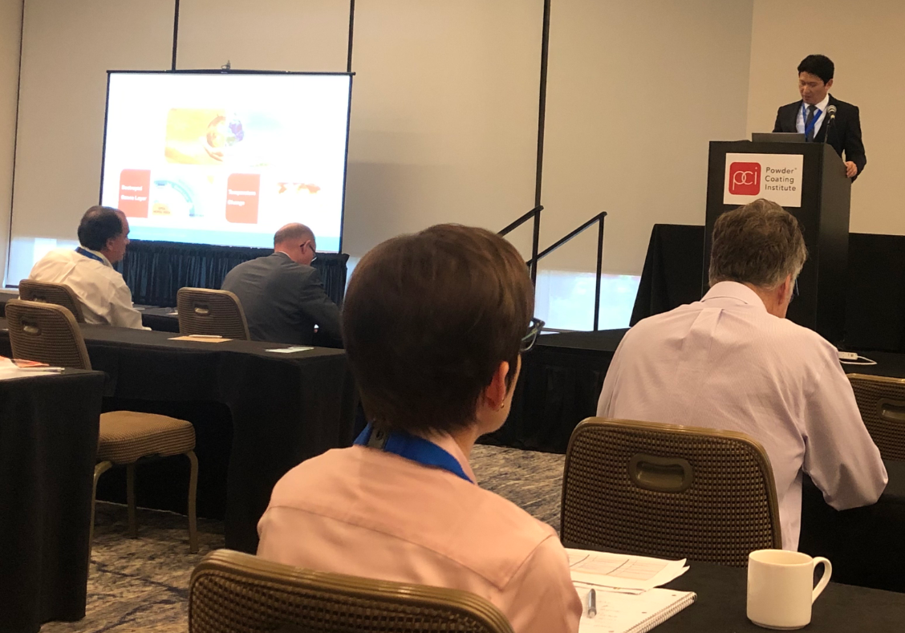
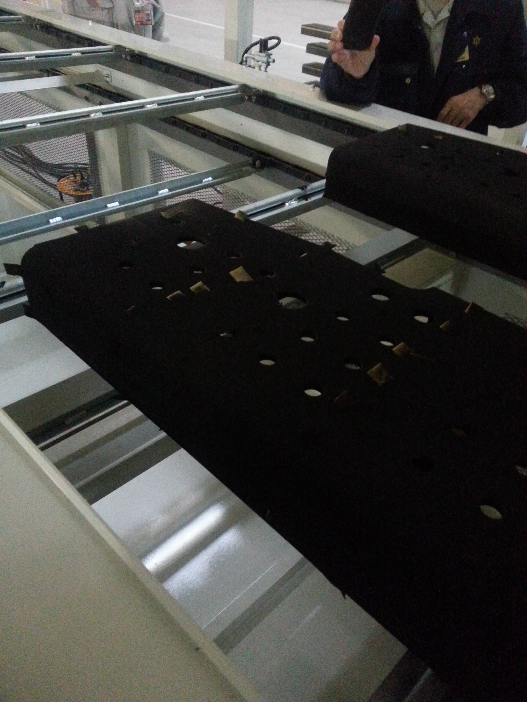
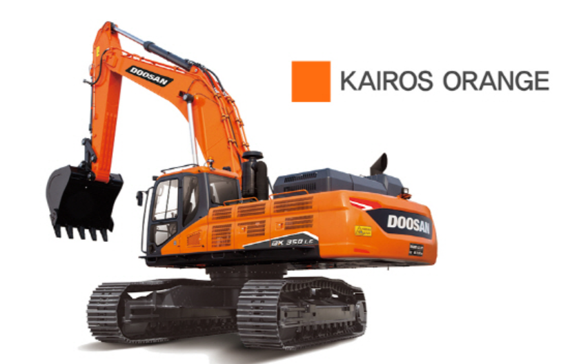
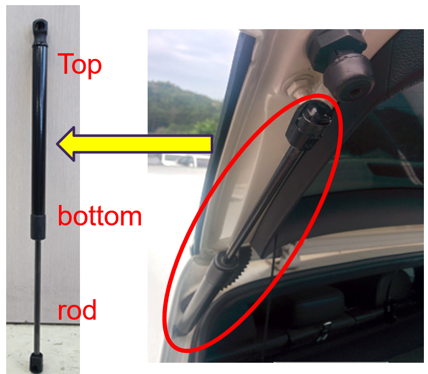

신제품 개발
방열·차열·Easy Cleaning 도료, Bonding 메탈릭, 고내후성 도료를 설계하고 제품화합니다.
POWDER COATING R&D · TECHNICAL SERVICE
분체도료 연구개발과 기술서비스 경험을 바탕으로, 새로운 배합의 가능성을 현장의 안정적인 성과로 연결합니다.

CHEMISTRY
MEETS CRAFT

황상옥은 가전·자동차·중장비·농기계 분야에서 분체도료의 개발, 인증, 양산 안정화까지 전 과정을 경험한 연구개발 전문가입니다.
새로운 기술과 고객의 요구를 정확한 물성, 품질 기준, 공정 언어로 번역하여 실질적인 제품 경쟁력을 만듭니다.
제품 설계부터 품질 인증, 고객 라인에서의 안정화까지 하나의 흐름으로 관리합니다.
방열·차열·Easy Cleaning 도료, Bonding 메탈릭, 고내후성 도료를 설계하고 제품화합니다.
Epoxy, Hybrid, Polyester, Polyurethane, Acrylic 배합 설계와 SMP·Bio-based·Silicone 수지 적용 경험을 보유합니다.
Qualicoat Class 2, GMW14664 Type A, WOM·QUV, ISO 12944 등 규격 기반의 평가와 인증을 수행합니다.
불량 분석, 라인 점검, 제품 런칭과 공정 안정화로 고객사의 품질 문제를 끝까지 해결합니다.




기술적 요구가 높은 산업 현장에서 검증된 개발 사례입니다.

80°C+HIGH TgAUTOMOTIVE · JAPAN
High Tg TGIC Free Polyester를 적용해 에지부 50µm 도막에서 1,500시간 내식성과 무흐름성을 확보했습니다.

2000WOM HOURSHEAVY EQUIPMENT
고내후성 TGIC Free IPA Polyester로 중장비 제품 승인과 색상·외관 품질을 구현했습니다.

205°C × 45 SECAUTOMOTIVE COMPONENT
Phenolic Epoxy와 NIR Oven 공정을 적용해 빠른 경화 조건에서도 외관 품질을 확보했습니다.
새로운 문제를 마주할 때마다
저를 움직이는 네 가지 기준입니다.
LET'S START A CONVERSATION
채용 문의나 포트폴리오 피드백을 편하게 보내주세요.